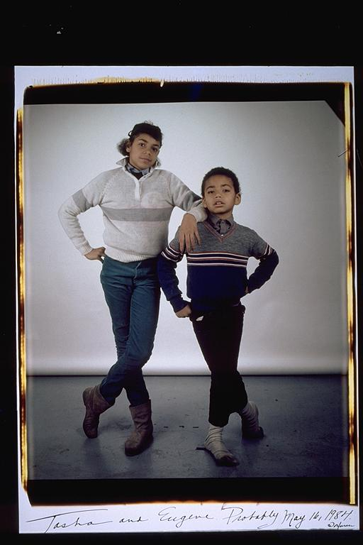

Pals: Boys Who Grew Up Together
elsadorfman.com/pals
Eugene: Me & Tasha:
T- What can I say about my sister. She was tall at an early age and very beautiful. T and I are very alike, and very close. She protected me as a young boy, and taught me countless things as a grew up. She has always been there when I needed her. All of my family (Tasha and I and my mother are all very similar). Schneebergs in the house, represent, WHAT!!! I've never taken a picture with my mother at Elsa's but I anticipate doing so soon. My mother and sister are very similar although they won't admit it. But like mother like daughter, monkey see, monkey do. I have the best family in the world.
Which segues into something else. My father -- although I never met my father Charles Graham -- I have a father. In fact, several. A village raised me and raised me WELL. So here is a shout out to all of my fathers/positive role models. Harvey, Oscar, Pastor Collins, Abraham, David, Boris, Martin L. King, Malcolm X, Myles Munroe, Tyreek, and most of all (JESUS/GOD/Holy Spirit)!
Aldo: Eugene, just like me, has an older sister about six years older. And like me, he learned a lot about what he knows from his older sister. I've known his sister for a long time also, and she's really cool, even though she probably owes Eugene a couple thousand in babysitting bills. But she was cool to hang out as young teenagers; she always gave us good advice about life.

elsad@comcast.net